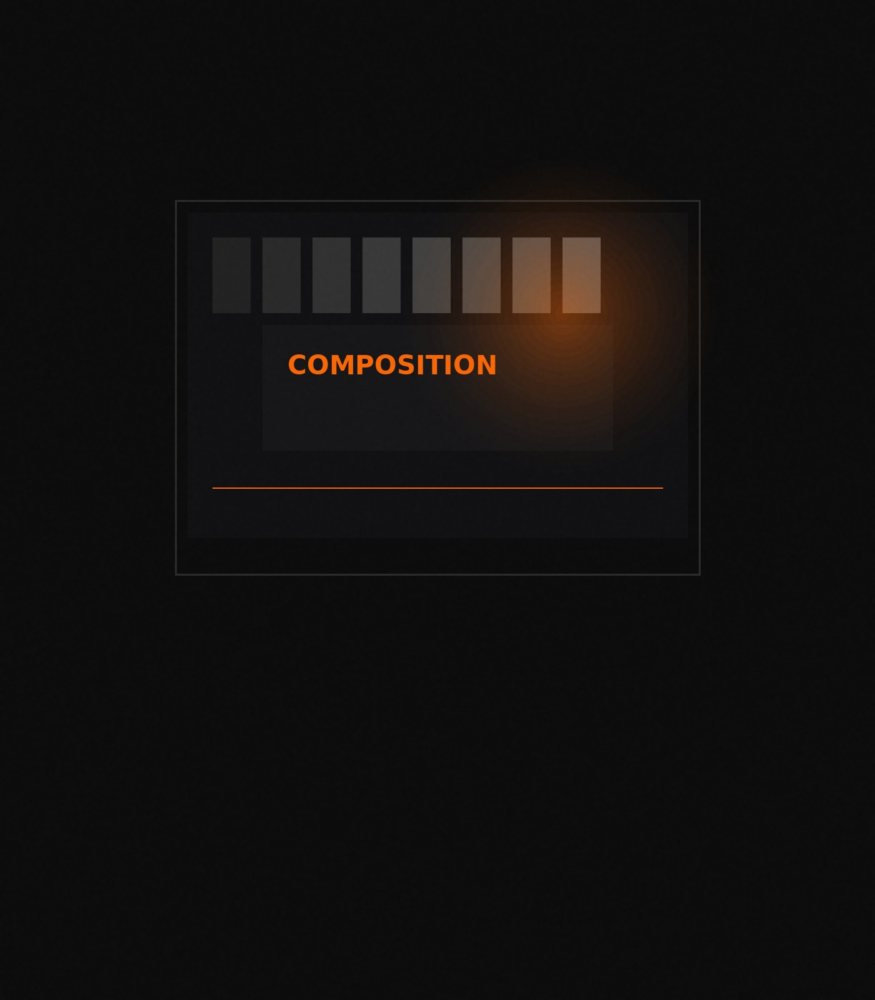
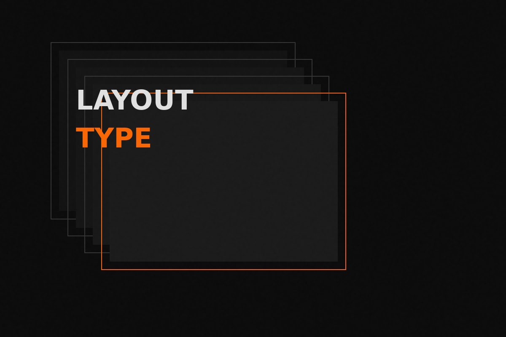
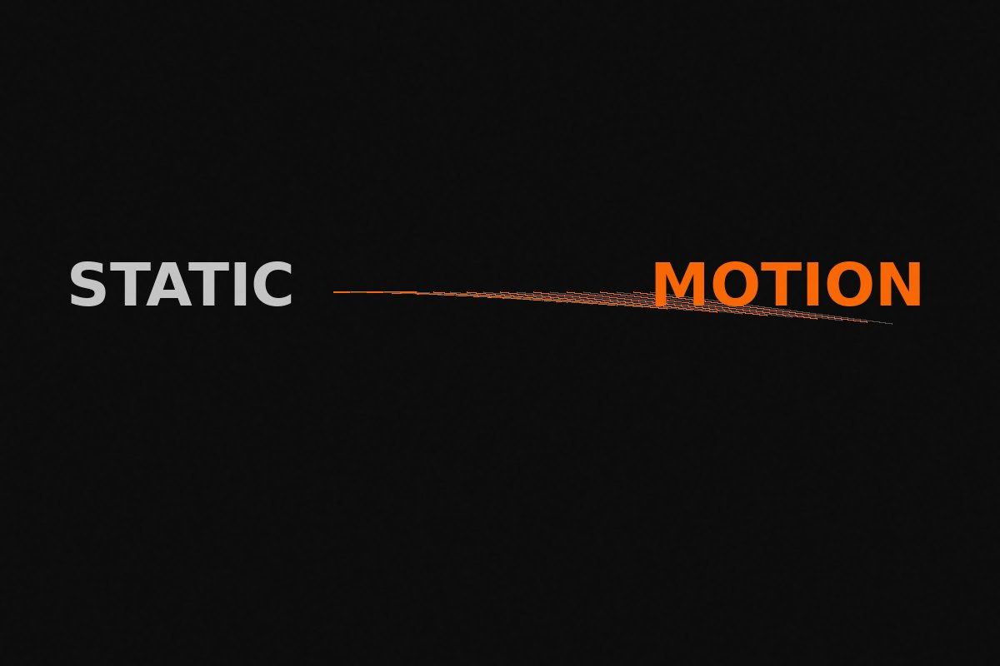
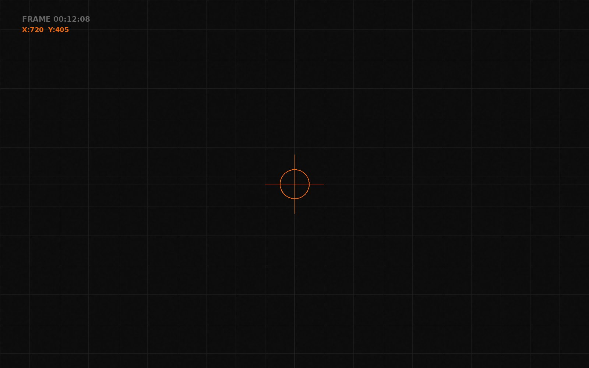
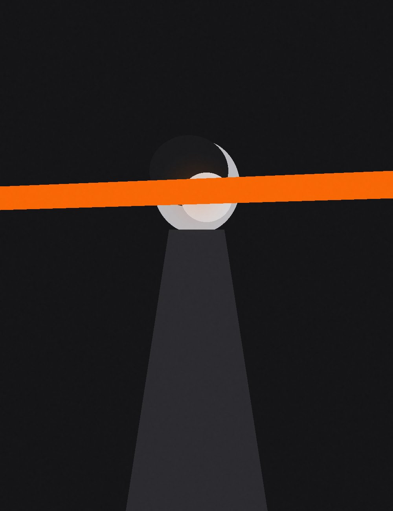

Question
What is the message?
Every project starts by naming the idea. Before colour or motion, the core message has to be clear enough to guide every visual choice.
About Nirbhay

6+ Years of creating visual experiences.
Graphic Design · Visual Design · Video · Motion Graphics
01 / The Beginning
It's about giving an idea the right
visual language.
For over 6+ years, Nirbhay Verma has built his career around one idea — visual communication that gives a message the right language, not just a polished look.
He began in graphic design, grounding composition, typography, colour and hierarchy in Photoshop and Canva. Curiosity for storytelling then pulled him into motion graphics.
Today he works across static and moving mediums — design, editing and animation — for visuals with clarity and energy.
01
From social media creatives and campaign visuals to compositions, layouts and digital artwork, Nirbhay uses Adobe Photoshop and Canva to develop designs that balance creativity with clarity.

02
With his transition into motion graphics, video became another medium through which he could communicate ideas.
Using Adobe Premiere Pro, Nirbhay works with video editing, sequencing, pacing and storytelling to turn individual shots into cohesive visual narratives.
03
With Adobe After Effects, Nirbhay brings static design elements into motion.
From animated typography and graphic transitions to visual effects, compositing and motion-driven compositions, he combines his graphic design background with animation to create visuals that have movement, energy and personality.

02 / The Approach
This approach allows Nirbhay to balance creativity with purpose.
Question
Every project starts by naming the idea. Before colour or motion, the core message has to be clear enough to guide every visual choice.
Question
Audience shapes tone, pace and detail. A campaign, a brand film or a social cut each need a different visual register.
Question
Emotion is designed, not added later — through rhythm, contrast, typography and the weight of each transition.
Question
Then comes craft: composition, motion and edit choices that make the idea land faster, cleaner and with more impact.

Every frame has a purpose.
Every movement has a reason.
Every detail contributes to the story.
01
Where it started.
Building a foundation in composition, typography, colour, layouts and digital artwork.
02
Learning to think beyond individual graphics and create visual systems and experiences with consistency and purpose.

03
Bringing design into movement through animation, editing, transitions, visual effects and storytelling.
04
A multidisciplinary visual creative working across graphic design, video editing and motion graphics, continuously exploring new techniques, styles and ways of communicating through visuals.
Whether it begins as a single graphic, a visual concept, a video or an idea that needs to come alive, Nirbhay brings together design, motion and storytelling to create work with purpose and personality.